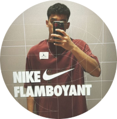

Minhas redes sociais
Quem sou eu?
Meu nome é Luis Gustavo Vilela Oliveira, nasci em Goiânia e tenho 17 anos. Sou estudante do COPE, onde estou realizando um projeto de estudos com os alunos de primeira e segunda série, chamado de a Comunidade do Conhecimento. Além disso faço um curso de programação e busco integrar isso ao meu projeto de estudos para poder dar acesso aos materiais para todo e qualquer aluno! Caso tenha interesse de levar esse projeto para sua instituição de educação entre em contato comigo.
Como falar comigo?
 /_lgvilela - Me segue lá no Instagram
/_lgvilela - Me segue lá no Instagram /lgvoliveira - Me acompanha lá no Facebook
/lgvoliveira - Me acompanha lá no Facebook /_lgvilela - Me segue lá no Twitter
/_lgvilela - Me segue lá no Twitter /Luis Vilela - Me adiciona lá no Linkedin
/Luis Vilela - Me adiciona lá no Linkedin